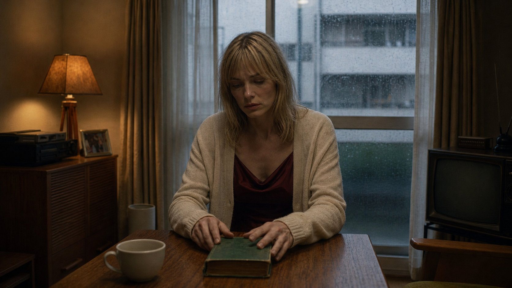
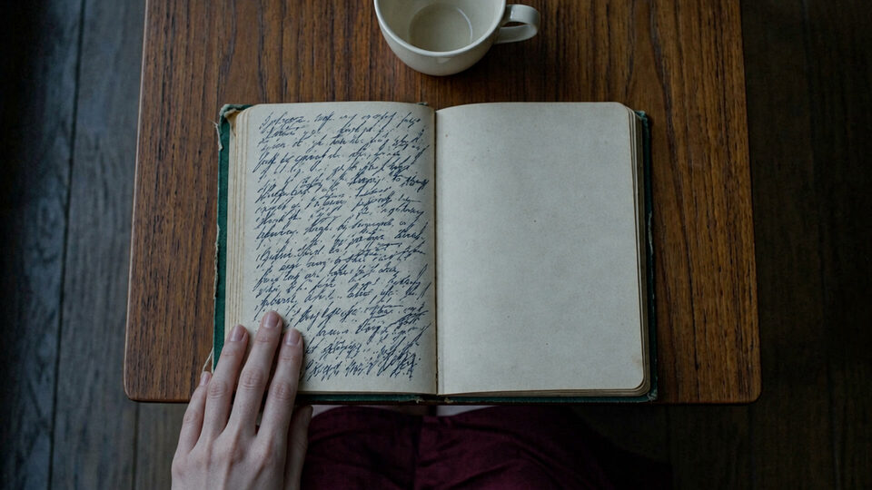
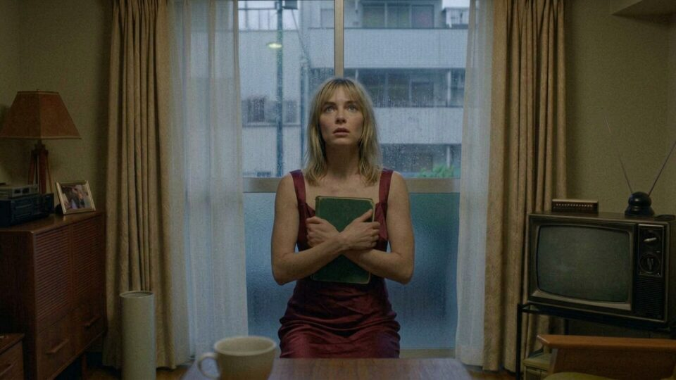

SHOT 01 · nw_s79 · nw_b1335 (19.04s -> 14.21s + 4.83s)
Vera closes the notebook
“Vera closes the notebook.”

Option 2 of 2 selected (1672×941) · Original file kept as generated · Open full-size image ↗
Surrounding frames


Prompt & references
Create ONE horizontal widescreen 16:9 photorealistic cinematic film still for the Tokyo noir drama Nobody's Witness, bridging the two supplied adjacent reference frames in Vera's dim apartment. Keep the same room and woman: worn wooden table, an open cloth-bound notebook of handwritten pages, a cup, the rain-beaded window with curtains, the warm table lamp, and blonde Vera in the same sleeveless rust-red dress with a cream cardigan. Compose a quiet medium close-up from across the table: Vera has just finished the last pages and is closing the notebook with both hands on its cover, her head lowered, her face hollowed by what her father's failing handwriting has told her. Soft warm lamplight against cold grey rain light, shallow focus, restrained intimate noir cinematography, natural hands and realistic anatomy, full 16:9 landscape frame with headroom. No other people, no captions, subtitles, readable invented text or watermarks.
- Preceding shared still:
/film/img/s79/508-almost-unrecognisable.jpg - Following still:
/film/img/s79/93-against-her-chest.jpg